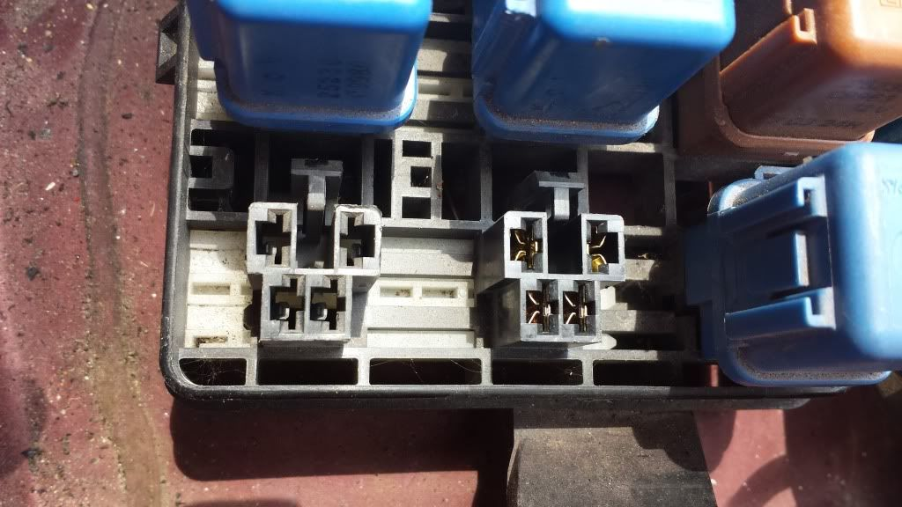

-
Ok, so I decided to tackle my issue of the AC moving from face vents to defrost vents during acceleration today. I have recently changed all the vac lines in the engine compartment and those behind the dash so that wasn't the issue. I ran into an article that told how to test if the vac pump was continuously running. However, when I turned the ignition to ON and turned the AC on, I didn't feel anything going on the pump or hear anything. So, I was thinking the pump was not even working.
On inspection of the relay for the vac pump I noticed that where the relay plugs in there are no contacts. See Below.

I went to the local JY to see if I could score one with contacts, but it was the same way, missing contacts in the vac pump one (left) and had them in the AC one next to it (right).
So, my question is, is this how it is supposed to be? Or is this some sort of common problem that I am running into? -
you have a NA car so no wiring for a vac pump.Hmmm, Whats next?
Full Size Bronco, smashing shit.
84ZXT -
So why would I have it? -
Any number of reasons. But it didnt come installed from the factory.Hmmm, Whats next?
Full Size Bronco, smashing shit.
84ZXT -
Ok. So, not the problem then? Back to square one… -
use a hand held vacuum pump & gauge.
your leaking vacuum somewhere between the intake manifold and your door actuators.
alot if the diaghrams in the vacuum actuators that our cars use for the ac like to go bad and not hold vacuum( acts as a vacuum leak)http://z31performance.com/showthread…2-2-(-now-NA2T
My build thread (: -
Check the vacuum reservoir. Do the FSM test on hold vac. Usually the check ball goes bad or leaks at the hose nipples.
1986 300ZX Turbo…sold
1990 Skyline GT-R…new money pit
2014 Juke Nismo RS 6-speed…daily

Copyright © 2006–. All rights reserved. Privacy Policy